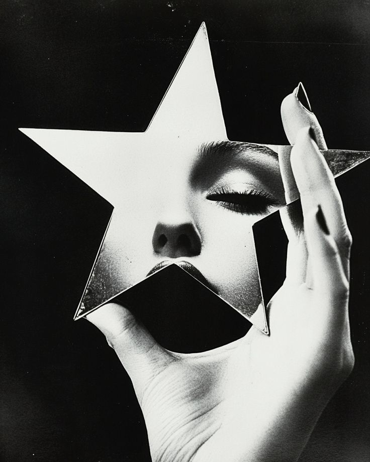
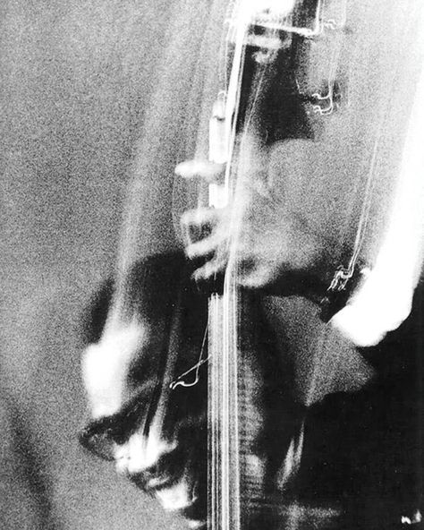
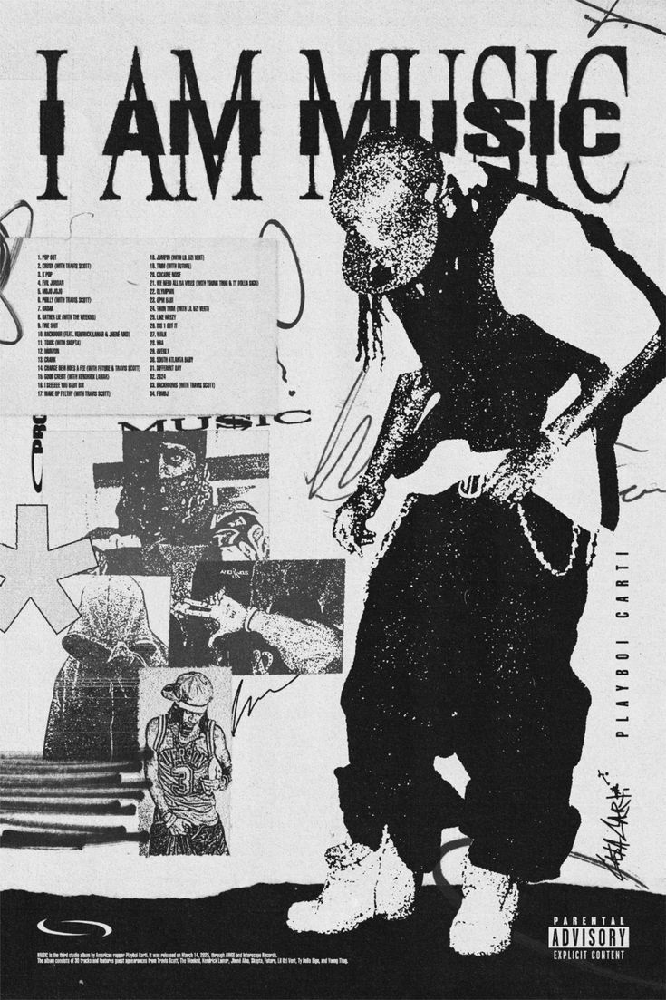

REKOMENDASI MUSIK
Temukan musik favoritmu berdasarkan genre
Lagu Populer Untukmu

Lagu Khusus
Alexandra, Pink Matters, Just You
Playlist personal favorit Anda (Indie Pop, Pop Jazz, R&B).
Jelajahi Semua Genre

JAZZ
Aliran musik improvisasi yang kaya harmoni.
Blues, Swing, Bebop, hingga Fusion.
POP
Lagu populer dengan melodi yang mudah diingat.
Global chart hits, Dance-Pop, dan Pop-Ballad.
R&B & SOUL
Vokal soulful, melodi *groovy*, dan beat urban.
Neo-Soul, R&B Kontemporer, dan Classic Soul.
.jpeg)
INDIE ALTERNATIVE
Musik yang diproduksi secara independen, unik, dan eksperimental.
Indie Rock, Dream Pop, dan Alternative Rock.

ROCK
Energi tinggi, powerful, dan penuh emosi.
Rock Klasik, Alternative Rock, hingga Pop Punk.
LAGU KHUSUS
Genre: Pop Jazz, Indie Pop, Pop Alternatif. Pilihan personal dengan sentuhan Pop Jazz dan Indie Pop yang menenangkan.
JAZZ
Genre: Musik improvisasi yang kaya harmoni dan ritme. Jazz dikenal karena kebebasan berekspresi dan instrumental yang kompleks.
INDIE ALTERNATIVE
Genre: Musik yang diproduksi secara independen (Indie), sering menampilkan gaya eksperimental dan lirik yang dalam.

POP
Genre: Musik yang populer dan mainstream, memiliki melodi yang mudah diingat, dan lirik yang relatable.
R&B & SOUL
Genre: Perpaduan Rhythm and Blues (R&B) dan Soul, menonjolkan vokal yang emosional, melodi groovy, dan beat yang kuat.
ROCK
Genre: Energik, powerful, dan penuh emosi. Rock ditandai dengan vokal yang kuat dan dominasi gitar.